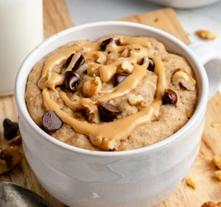
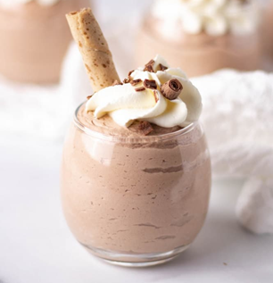
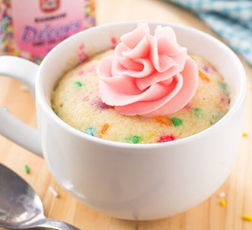
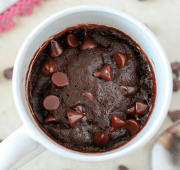

 1-min Microwave Cookie Mug
1tbsp unsalted butter
1tbsp granulated sugar
1tbsp brown sugar
1/2tbsp vanilla extract
1/8tbsp pinch salt
1 egg yolk
3tbsp all-purpose flour
2tbsp chocolate chips
Instructions
Microwave butter in a mug until melted, 30 seconds to 1 minute. Mix sugars, vanilla extract, and salt. Mix in egg yolk until no traces of the yolk are seen. Mix in flour. Fold in chocolate chips.
Microwave on high for 40 seconds, or a maximum of 50 seconds.
 Fast Choccy Mousse
150g of 70% dark chocolate
6 egg whites
2tbsp golden caster sugar
4tbsp creme fraiche
Instructions
Melt the chocolate in the microwave, stirr every 30 seconds. Whisk the egg whites and scatter in the sugar and whisk again until the texture is stuff.
Add a big tablespoon of the egg white to the melted chocolate and mix, work fast so the chocolate doesn’t cool. Fold in the remaining egg whites carefully. When finished in the fridge for 2-3 hours.
Cupcake Mug
All-purpose flour
white sugar
baking powder
dash salt
butter
milk
vanilla
sprinkles
Instructions
Add the dry ingredients to a microwave safe mug; flour, sugar, baking powder, and salt.
Stir in the wet ingredients: milk, melted butter, and vanilla. Add sprinkles, if desired.
Microwave for 70-90 seconds.
 Microwave Mug Brownie
2tbsp butter, mild extra virgin olive oil
1/4 cup (30g) all-purpose flour
3 tablespoons (35g) sugar
2tbsp natural unsweetened cocoa powder
Pinch kosher salt
3tbsp milk, water, or coffee
1/8 teaspoon vanilla extract
Instructions
Combine the dry ingredients in a mug. Stir with fork. Add wet ingredients, stir.Then add the milk (or water or coffee) and vanilla. Stir with the same fork until smooth.
Microwave, uncovered, on high power for 1 minute.